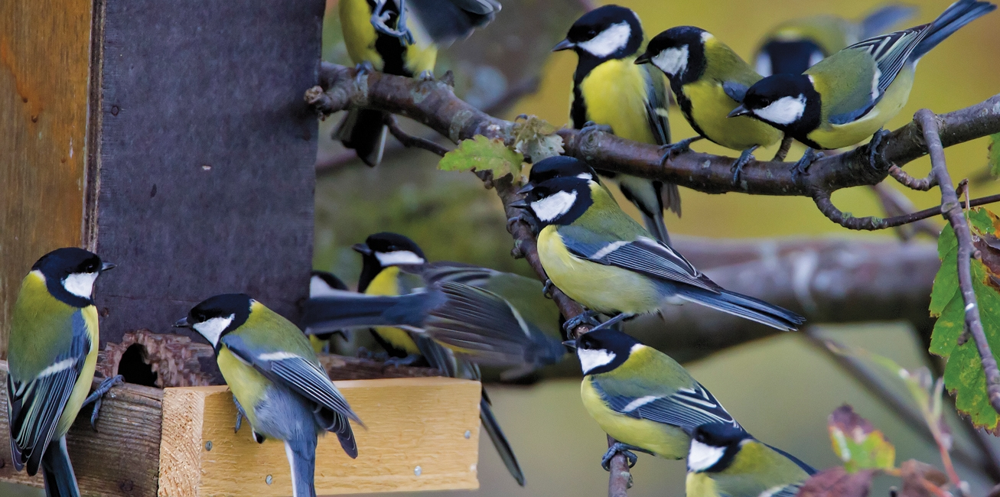
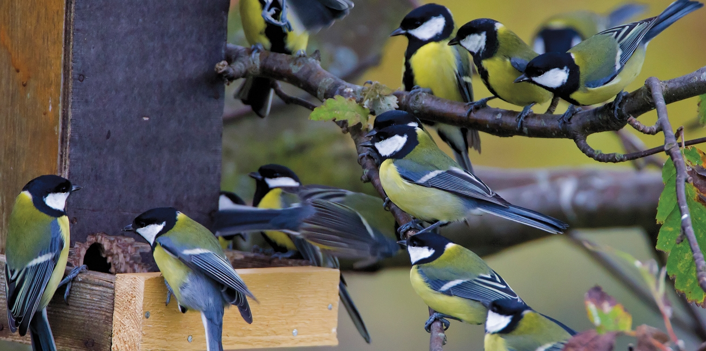

The influence of
social processes and structures
on cultural evolution
Michael Chimento
Human culture
Animal culture

Culture evolves
Cultural behaviors exhibit variation, competition, and inheritance, leading to evolutionary processes.1
Distributions of traits evolve
Forms of traits evolve
Example: the evolution of flight paths in a transmission chain experiment with homing pigeons.3
Fits the core criteria of cumulative cultural evolution, where more effective innovations supplant an existing tradition.2
Cultural evolution can be cumulative
More complex forms of evolution can occur, such as recombination between cultural lineages.1,2
Cognition and culture
Culture is inherited through social learning.1
To "reproduce", behavior must pass through the bottleneck of transmission, constrained by attention, memory, perceptual biases and so on.2
Social learning should be selective to be adaptive, leading to social learning strategies that determine when, what and from whom an individual should learn.1,3,4,5
Culture is maintained by individual learning.6
Such guided variation via reinforcement learning acts as another evolutionary force.1

Social factors and culture
Social networks are the substrate of culture.1
Culture is responsive to social structure, e.g. network size, structure and composition.2,3,4
What about social processes?
Population turnover: the gradual replacement of individuals through immigration/emigration or births/deaths.
 

The great tit (Parus major)
Small passerine species (13-20 g.) found across Eurasia in woodlands, suburban and urban habitats.1
Exhibit fission-fusion social system at different timescales.1,2,3
Cognition and neuronal function have been under recent positive selection.4
Innovative5,6,7, well known social learners.8,9,10
Social learning in great tits
Research methods
Cultural diffusion experiments

Automated data collection

Computational modeling
Thesis chapters
- What's the effect of turnover on a cultural trait in birds?
- How does reinforcement learning influence cultural diffusions?
- How does variation in turnover influence cultural evolution?
- What if immigrants are already knowledgable about the behavior?
- How does social network architecture impact cultural evolution?
- How does complex culture evolve in wild populations of birds?
- What is the relationship between efficiency and cultural evolution?
Turnover and adaptive cultural evolution
Naive learners have been shown to introduce structure and reduce complexity in human and animal experiments.1,2
In the context of adaptive cultural evolution, turnover can:
- Increase behavioral innovation/noise available for selection3
- Improve sampling of available behavioral space4,5

Can turnover drive cultural evolution in a foraging context?
18 micro-populations of 6 members each at a given time (N=181)
Tutor trained on inefficient solution
2 birds replaced each week for 4 weeks
Turnover can drive cultural evolution

Compared to static, turnover populations selected for a more efficient foraging strategy1
Experienced birds were innovating, immigrant birds were adopting the innovation.
Turnover can be a mechanism for cultural change with support for the hypothesis that naive individuals are better samplers.
- What's the effect of turnover on a cultural trait in birds?
- How does reinforcement learning influence cultural diffusions?
- How does variation in turnover influence cultural evolution?
- What if immigrants are already knowledgable about the behavior?
- How does social network architecture impact cultural evolution?
- How does complex culture evolve in wild populations of birds?
- What is the relationship between efficiency and cultural evolution?
Production rules influence diffusion dynamics
Agent based model connected sub-models of acquisition1 and production.2
Simulated diffusion of novel behavior that competed against an established tradition.
Conducted a sensitivity analysis across many different combinations of reinforcement learning rules, transmission parameters and network architectures.
Production rules influence diffusion dynamics
Production rules influence diffusion dynamics
Production rules impacted diffusion rate, and divergences between acquisition and production.
Highlights importance of distinguishing social transmission and social influence, as both have been called social learning.
- What's the effect of turnover on a cultural trait in birds?
- How does reinforcement learning influence cultural diffusions?
- How does variation in turnover influence cultural evolution?
- What if immigrants are already knowledgable about the behavior?
- How does social network architecture impact cultural evolution?
- How does complex culture evolve in wild populations of birds?
- What is the relationship between efficiency and cultural evolution?
What mechanisms link turnover to cultural evolution?
Extended this model to include social dynamics: turnover tempo + magnitude.
Residents began with knowlege of low payoff tradition, but a higher payoff alternative could be innovated.
Compared behavioral frequencies and knowledge states to static populations.
Effect of turnover regimes on relative efficiency
Each cell is colored by relative effiency compared to static populations (white).
We found neutral, optimal and suboptimal regimes compared to static populations.
The effect of regime depended on network size, structure, behavioral transmissibility, and learning rules.

Information loss links turnover to cultural evolution
Polymorphic agents declined as regimes increased in intensity.
Optimal regimes contained highest levels of monomorphic agents holding the high payoff behavior.

- What's the effect of turnover on a cultural trait in birds?
- How does reinforcement learning influence cultural diffusions?
- How does variation in turnover influence cultural evolution?
- What if immigrants are already knowledgable about the behavior?
- How does social network architecture impact cultural evolution?
- How does complex culture evolve in wild populations of birds?
- What is the relationship between efficiency and cultural evolution?
Experimental design: spatial variability
Tits flexibly change preferences in response to temporal variation.1 What about spatial variation?
Simulated an immigration event by switching 2 birds between pairs of populations with conflicting traditions (N= 17 replicate populations; 136 birds).
Environmental cues were either symmetric or asymmetric between populations.
Experimental design: spatial variability
Puzzle boxes could give two possible types of rewards.
Symmetric payoff condition: both solutions obtained mealworms.
Asymmetric payoff condition: prior to immigration the seeded tradition obtained buffalo worms, while the other side obtained sunflower seeds. Post-immigration the immigrant side obtained buffalo worms, reside side obtained mealworms.
Predictions
Immigrants most likely to adopt the resident solution when they enter a novel environment, and when the resident side offers a greater reward
Environmental cues can trigger social learning strategies
The proportion of immigrants adopting the resident solution matched our predictions.
Immigration into a novel environment with asymmetric payoffs increased reliance on social learning and payoff biased learning.
Complements recent work showing that humans increase reliance on social information after immigration.1
- What's the effect of turnover on a cultural trait in birds?
- How does reinforcement learning influence cultural diffusions?
- How does variation in turnover influence cultural evolution?
- What if immigrants are already knowledgable about the behavior?
- How does social network architecture impact cultural evolution?
- How does complex culture evolve in wild populations of birds?
- What is the relationship between efficiency and cultural evolution?
Evolution through recombination
Partialy connected networks shown to be beneficial for the evolution of lineages & their recombination.1
Multi-level human networks hypothesized to be specially adapted to cultural evolution, yet null model was a complete network.2
The effect of network architecture on cultural recombination
We modeled recombination in many different partially connected architectures while controlling for key network metrics.1
Little effect of architecture. Strong effect of size, transmission mechanism.
- What's the effect of turnover on a cultural trait in birds?
- How does reinforcement learning influence cultural diffusions?
- How does variation in turnover influence cultural evolution?
- What if immigrants are already knowledgable about the behavior?
- How does social network architecture impact cultural evolution?
- How does complex culture evolve in wild populations of birds?
- What is the relationship between efficiency and cultural evolution?
Cultural recombination in wild birds
How can recombinatorial culture arise and persist in great tits?
Wild diffusion experiment using a two-action task over multiple field seasons (N=5 replicate sub-populations; 414 learners).1
- Slide for 3 years.2,3
- Dial then diffused for 4 weeks.
- Dial + slide (scaffolded) for 3 weeks.
- Dial + slide (unscaffolded) the following winter

Cultural recombination in wild birds
Tits socially learn components and asocially reconstruct two-action solution.
Without scaffolding, the complex behavior would likely go extinct after several generations.
Traditions were constrained by the socially learned individual components.
Cultural recombination in wild birds
Traditions were constrained by the socially learned individual components.
- What's the effect of turnover on a cultural trait in birds?
- How does reinforcement learning influence cultural diffusions?
- How does variation in turnover influence cultural evolution?
- What if immigrants are already knowledgable about the behavior?
- How does social network architecture impact cultural evolution?
- How does complex culture evolve in wild populations of birds?
- What is the relationship between efficiency and cultural evolution?
Efficiency and CCE
Efficiency defined from the perspective of the behavior or the organism.
$$E \propto \frac{\sum{\pi}}{C_A + \sum{C_P}}$$
Reviewed environmental, social and individual constraints on culture.
Argued efficiency is critical for CCE in light of these constraints.
General discussion
- Social processes
- Social structure
- Acquisition versus production
- Information caching
I) Social processes
The introduction of naive learners can shape culture, highlighting importance of guided variation for CE, rather than transmission biases or attractors.
Population composition, determined by social processes, is important to predict effects of guided variation.
Contrasting influences on cultural diversity.
Co-evolution of fission-fusion sociality and social learning.
II) Social structure
Network structure influences divergence between acquisition and production.
Network structure modulates the effect of social processes on culture.
Even lattice networks allow for the evolution of cultural lineages.
Social structure can facilitate recombination, yet hinder diffusion of those innovations.
III) Acquisition versus production
Social learning has been used to describe both social transmission (acquisition) and social influence (on production).
Discussions of social learning strategies have treated acquisition and production biases interchangeably.
They should be mathematically modeled as separate phenomena as there may be different biases operating on either (e.g. conformist transmission in Aplin et al. 2015, payoff-biased social influence in Ch. 4)
IV) Efficiency and information caching
Non-human animals have an especially limited budget of attention and energy to invest in costs of acquiring novel behavior.
Behaviors must be exceptionally learnable and/or adaptive to persist through the tight bottleneck of transmission.
Information caching (storage of information beyond the behavioral production) is another critical component that further explains why CCE is not widely observed.
Dense social networks might approximate information caching.